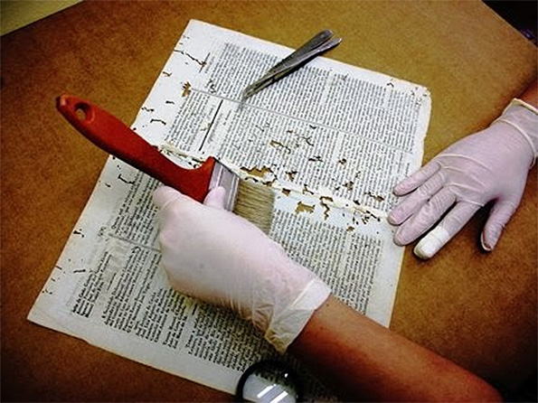

Hora da limpeza
Os livros possuem poros, assim como a nossa pele. E quando eles ficam muito tempo na estante costumam “sugar” o pó e outras sujeiras. Isso pode deixar o seu livro com manchas e amarelados. Além da humidade, que resulta naquele mofo preto. Uma prática muito boa é tirar os livros da estante de tempos em tempos e folheá-los, um a um. Deixe passar o ar pelas páginas, depois é só recolocar na estante.
Material de Limpeza:
– Pincel chato
– Algodão
– Pano limpo
– Acetona
– Lixa de madeira 220
– Borracha
